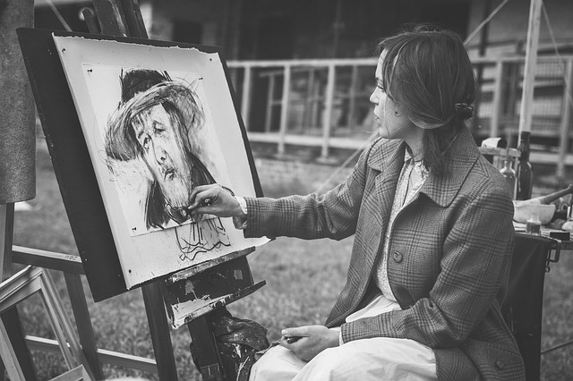
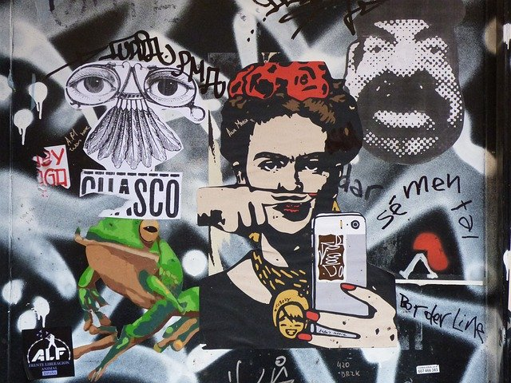
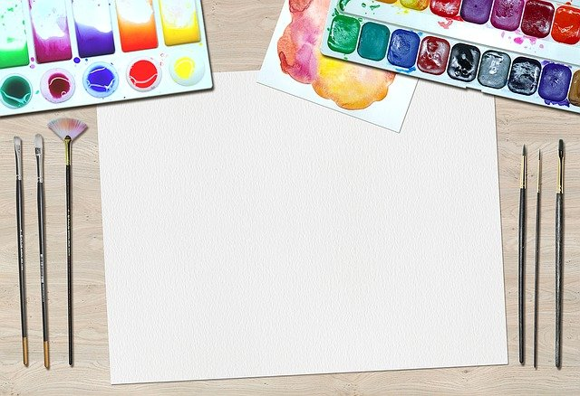

This is an article about portraits. It touches many subjects on how
to take the perfect portrait. Such as what lense to choose and
what to consider when choosing. F-stops, Field of view and focus distance.
The article also says something about editing.

Draw with Charcoal
This article talks about charcoal drawing. It says something about
the different techniques to use when drawing with charcoal. Onwards
it talks about the history of charcoal drawing.

Make the perfect collage
In this article you will learn to make the perfect collage. Walk in the footsteps
of Picasso and explore this magnificent art expression. After reading this you will
be a collage master
Be minimalistic in your style
Learn to be a minimalist in the true sense of the word. Express yourself using the
simplest language of them all. What does this style communicate. This style is frowned
upon by many artist, but here you will learn to embrace it, and love it!
Make the perfect timelapse
Learn to make the perfect timelapse like seen above. This method really
helps establishing your surrondings and give the rest of your story context.
What is required to make a timelapse look good? Learn all about it and make it a
new tool in your toolbox

Make art using Waterpaint
Who doesn`t love waterpainting? It something we all did as a kid. In this article
you will take this childhood joy to a new level. Become a pro with the paint brush, and make
things that could sell in an art gallery.